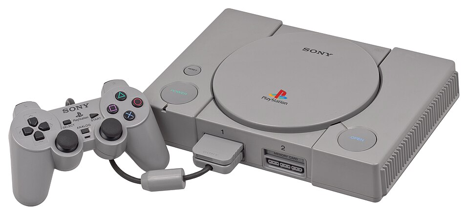

PlayStation
Sony pirmā PlayStation iznāca Japānā 1994. gadā. Tā izmantoja CD diskus un palīdzēja trīsdimensiju spēļu pasaulēm kļūt ierastākām.

Sony pirmā PlayStation iznāca Japānā 1994. gadā. Tā izmantoja CD diskus un palīdzēja trīsdimensiju spēļu pasaulēm kļūt ierastākām.